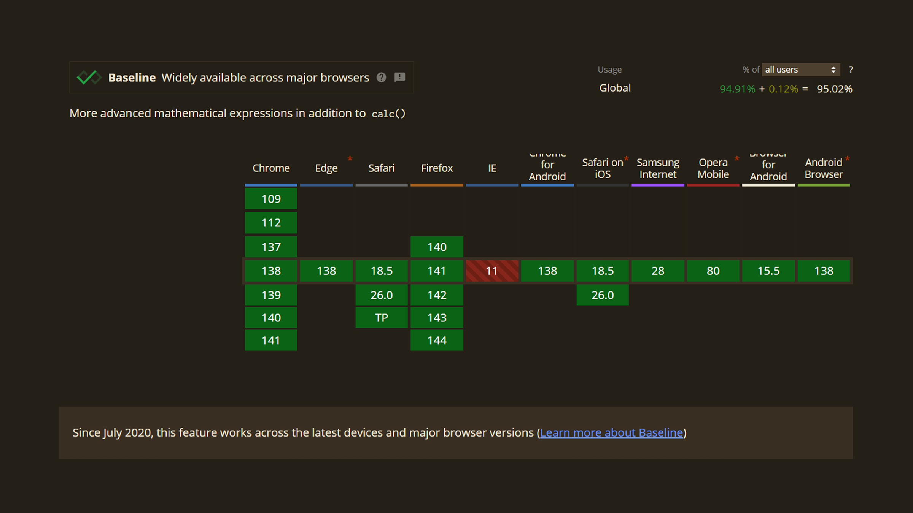

Approach #2: Change the heading size not in a responsive way but in a fluid one.
Responsive font size
Fluid font size
How to make the font fluid?
JavaScript ü¶ñ
Preprocessors and mixins
calc() and the vw/vh units
clamp().
The clamp() definition
The CSS function for setting up the range of values for some CSS properties.

clamp() anatomy
Available values are:
Minimum (minValue)
Preferred (prefValue)
Maximum (maxValue).
clamp(minValue, prefValue, maxValue);
A preferred value enables smooth text size adjustments.
Preferred width (vw)
y1 — the min font size
y2 — the max font size
x1 — the min breakpoint (here the min font size ends)
x2 — the max breakpoint (here the max font size begins).
Relative size (rem)
y1 — the min font size
y2 — the max font size
x1 — the min breakpoint (here the min font size ends)
x2 — the max breakpoint (here the max font size begins).
Approach with the formula
More smoother scaling
Text isn’t too small on mobile devices
Text doesn’t become larger too abruptly as the screen width increases.
Part NaN: Don’t touch it when it works
Success in fluid approach
Don’t set the min and the max font sizes in pixels
Keep an eye on the ratio between the largest and the smallest font sizes.
Why wouldn’t we use pixels?
If you set the font size in pixels, the browser’s default text size (16 pixels) will be overridden, and text won’t scale when user settings change.
Example with the html element
html { font-size: 15px;}h1 { font-size: 1rem;}
Ratio between larger and smaller values
The max font size must be less than or equal to 2.5 times the min font size ü§Ø
Why this ratio?
Text with inappropriate sizing doesn’t scale well because it won’t achieve a proper increase due to overlap between zoom and scaling functions.
Who resizes and rescales the UI?
People with different eye conditions
Those who want to make font and elements larger for any reason.